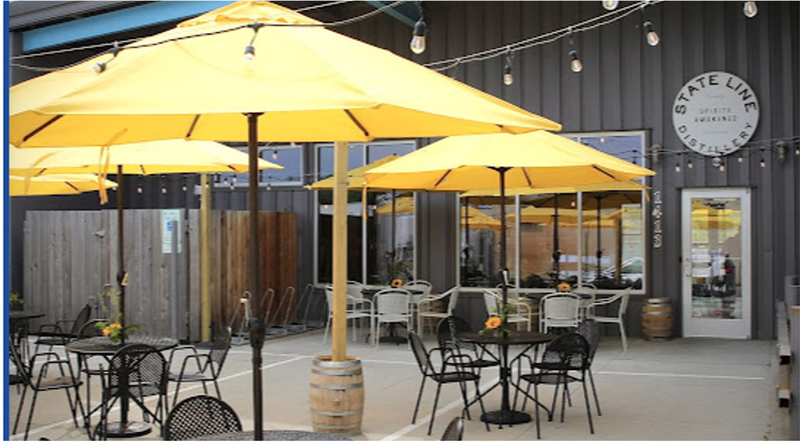
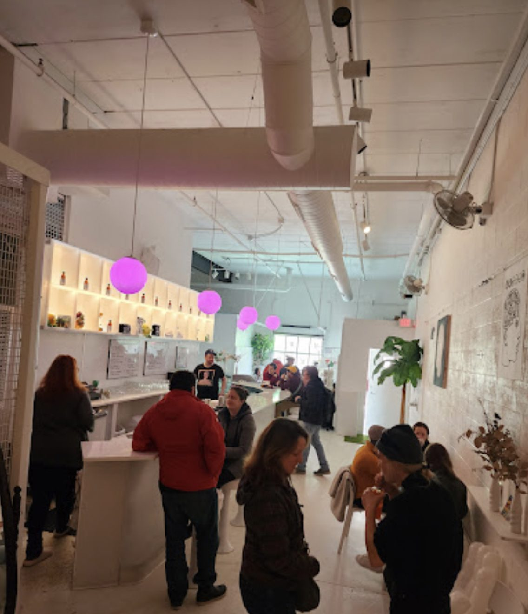

05 · Industrial reuse · Completed
Northern Court
- Address
- 1401 and 1413 Northern Court, Madison
- Type
- Industrial reuse
- Leasable space
- About 12,000 SF
- Converted
- 2016–2017
- Tenants
- State Line Distillery, Imaginary Factory, Creative Energy Designs
- Partners
- William Butcher and Eric Welch
NMD project, William Butcher and Eric Welch
Two industrial buildings that turned a short street into one of Madison’s craft-beverage blocks.
- Two industrial buildings, about 12,000 SF of leasable space, converted in 2016–2017.
- Tenants: State Line Distillery (opened 2017); Imaginary Factory, a liqueur and bitters maker with a cocktail bar (about 2,500 SF; its founder was a 2026 James Beard Award finalist); Creative Energy Designs (about 3,600 SF).
- The buildings turned a short industrial street into one of Madison’s craft-beverage blocks.
